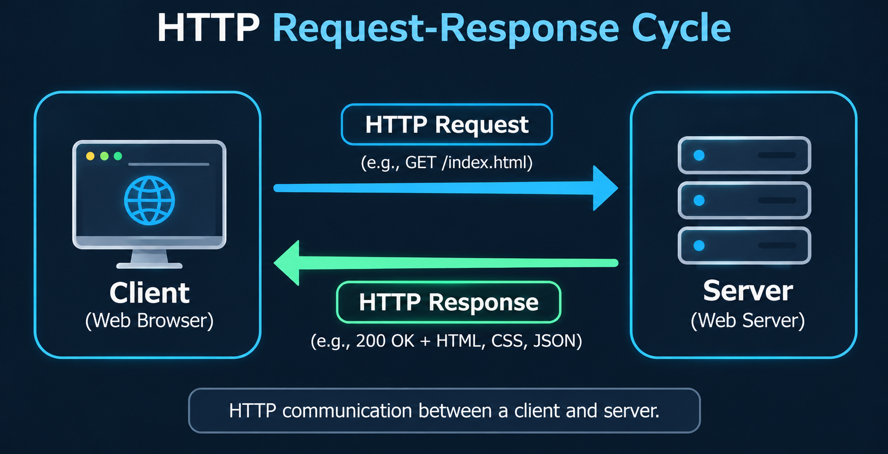

The Request-Response Cycle
HTTP follows a client-server model. A client, such as a web browser, sends an HTTP request to a server. The server processes the request and returns an HTTP response.

- The user enters a URL into the browser.
- The browser locates and connects to the server.
- The browser sends an HTTP request.
- The server processes the request.
- The server returns an HTTP response.
- The browser displays the received content.
Common HTTP Methods
HTTP methods specify the action a client wants to perform on a resource.
| Method | Purpose |
|---|---|
| GET | Retrieve a resource. |
| POST | Submit data to a server. |
| PUT | Create or replace a resource. |
| DELETE | Request removal of a resource. |
HTTP Status Codes
HTTP responses include status codes that indicate the result of a request.
- 200 OK: Request succeeded.
- 301 Moved Permanently: Resource has moved.
- 404 Not Found: Resource was not found.
- 500 Internal Server Error: Server encountered an error.
HTTP vs. HTTPS
HTTPS uses HTTP over a secure connection protected by TLS. Encryption helps protect information exchanged between browsers and servers from interception and modification.